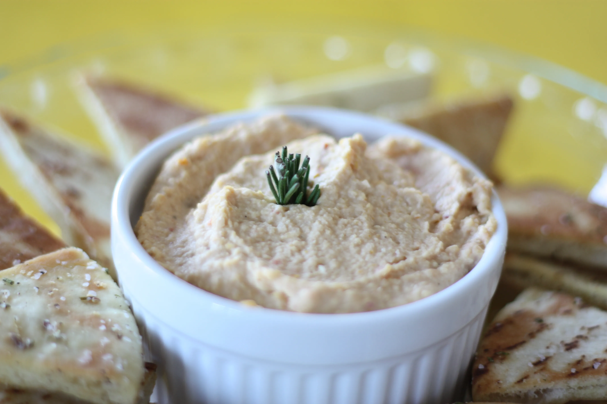

Hole Foods Hummus
This makes a decent amount of hummus, 10 lb. All measurements are by weight unless otherwise specified.
This recipe requires a food processor.
Ingredients
- Garbanzo Beans, rinsed : 66 oz
- Garlic Cloves : 1 oz
- Tahin : 6 oz
- Lemon Juice : 3 oz
- Salt : 1 tbsp
- Water : 22 oz
Preparation
- Put together the tahin (make sure to mix the container well, shake if you can), the garlic, lemon juice, salt, and water.
- Put half of the Garbanzo beans into the food processor with about half of the container you just prepared containing the other ingredients.
- Run the food processor until a creamy consistency is reached.
- Empty the food processor into a new container.
- Repeat the process with the rest of the beans and ingredients, making sure to reach that creamy consistency.
- Combine the batches you've processed and you're left with the final product!